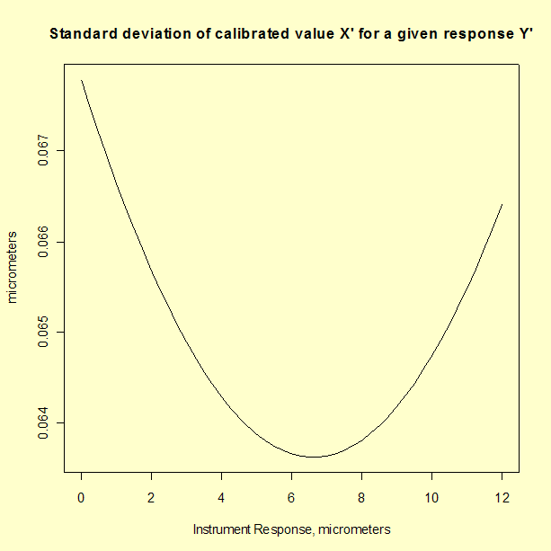

|
2.
Measurement Process Characterization
2.3. Calibration 2.3.6. Instrument calibration over a regime 2.3.6.7. Uncertainties of calibrated values
|
|||
| Propagation of error for the linear calibration | The analysis of uncertainty for calibrated values from a linear calibration line can be addressed using propagation of error. On the previous page, the uncertainty was estimated from check standard values. | ||
| Estimates from calibration data |
The calibration data consist of 40 measurements with an optical
imaging system on 10 linewidth artifacts. A linear fit to the data
gives a
calibration curve with the following estimates for the intercept, \(a\),
and the slope, \(b\),
Parameter Estimate Std. Error t-value Pr(>|t|) a 0.2357623 0.02430034 9.702014 7.860745e-12 b 0.9870377 0.00344058 286.881171 5.354121e-65 with the following covariance matrix.
a b
a 5.905067e-04 -7.649453e-05
b -7.649453e-05 1.183759e-05
The results shown above can be generated with R code. |
||
| Propagation of error | The propagation of error is performed for the equation $$ X' = \frac{Y'- \hat{a}}{\hat{b}} $$ so that the squared uncertainty of a calibrated value, \(X'\), is $$ \hspace{-.25in}u^2 = \left[ \frac{\partial{X'}}{\partial{Y'}} \right]^2 s_{Y'}^2 \, + \, \left[ \frac{\partial{X'}}{\partial{\hat{a}}} \right]^2 s_{\hat{a}}^2 \, + \, \left[ \frac{\partial{X'}}{\partial{\hat{b}}} \right]^2 s_{\hat{b}}^2 \, + \, 2 \left[ \frac{\partial{X'}}{\partial{\hat{a}}} \right] \left[ \frac{\partial{X'}}{\partial{\hat{b}}} \right] s_{\hat{a}\hat{b}} $$ where $$ \frac{\partial{X'}}{\partial{Y'}} = \frac{1}{\hat{b}} $$ $$ \frac{\partial{X'}}{\partial{\hat{a}}} = \frac{-1}{\hat{b}} $$ $$ \frac{\partial{X'}}{\partial{\hat{b}}} = \frac{-(Y'-\hat{a})}{\hat{b}^{2}} $$ The uncertainty of the calibrated value, \(X'\), $$ \hspace{-.25in}u^2 = \left( \frac{1}{\hat{b}} \right)^2 s_{Y'}^2 \, + \, \left( \frac{-1}{\hat{b}} \right)^2 s_{\hat{a}}^2 \, + \, \left( \frac{-(Y'-\hat{a})}{\hat{b}^{2}} \right)^2 s_{\hat{b}}^2 \, + \, 2 \left( \frac{-1}{\hat{b}} \right) \left( \frac{-(Y'-\hat{a})}{\hat{b}^{2}} \right) s_{\hat{a}\hat{b}} $$ is dependent on the value of the instrument reponse \(Y'\). | ||
| Graph showing standard deviation of calibrated value X' plotted as a function of instrument response Y' for a linear calibration |  | ||
| Comparison of check standard analysis and propagation of error | Comparison of the analysis of check standard data, which gives a standard deviation of 0.119 µm, and propagation of error, which gives a maximum standard deviation of 0.068 µm, suggests that the propagation of error may underestimate the type A uncertainty. The check standard measurements are undoubtedly sampling some sources of variability that do not appear in the formal propagation of error formula. | ||